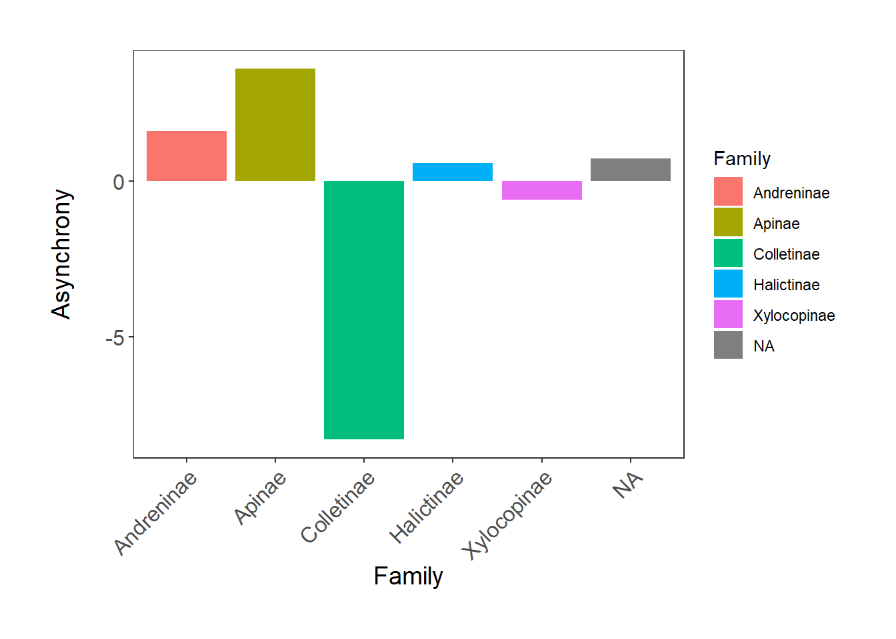
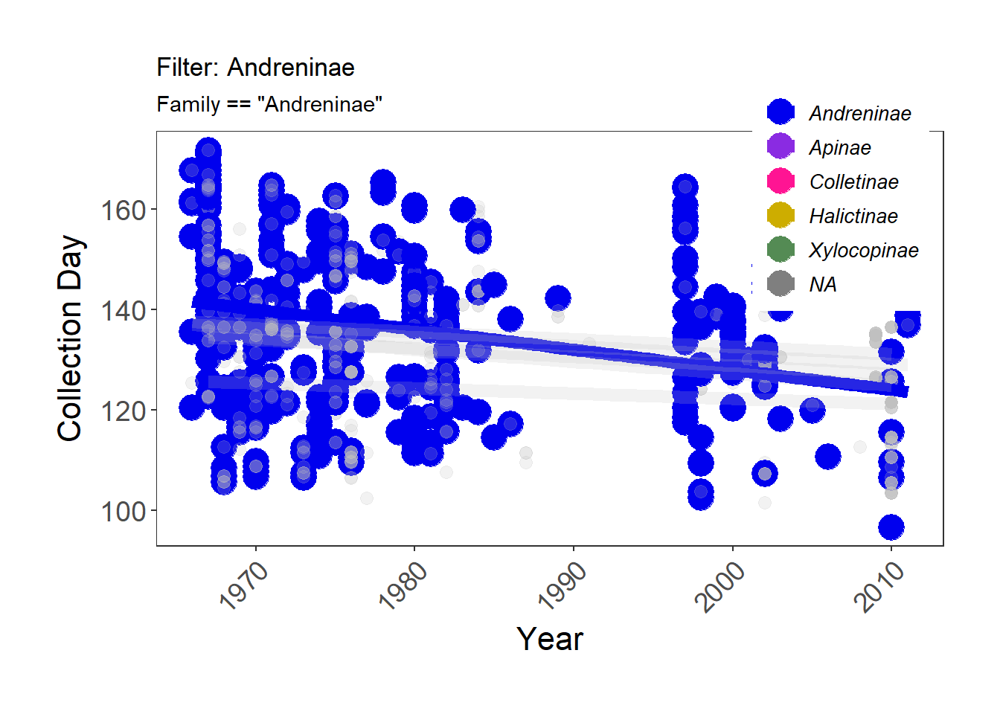

Learning goals and steps:
1. Customize histograms in ggplot2
2. Barplots in ggplot2
3. More practice with scatterplots and regression lines
4. Animate your plots
5. Create your own ggplot theme
6. Challenge yourself!
Due: Nothing this week
Following from our first tutorial on data visualization using ggplot2, we are now back for more ggplot2 practice and customization. Since no two figures are ever the same, the ability to customize your figures is key. The ultimate aim of this tutorial is to help you to make your figures even more beautiful and informative!
As with part 1, there are several plots that you will need to save for your write-up. They are indicated with the blue text.
Before starting: 1) get the three datasets and packages from last week uploaded into R, 2) setup your script and, 3) ANNOTATE it!
Use the code from last week to generate the histogram of flower-pollinator asynchrony.
If we want to manipulate the x-axis to display every 5 values from -30 through 30 you can run the following code breaks = c(seq(-30,30,5)) within the scale_x_continuous() function of ggplot2. Do you understand what the seq() function does? Look up the help documentation if you are unsure.
We can also specify the limits of the plot axes – add the layers (of code) below to your ggplot() code and you’ll be able to see that the limit of the y axis now extends to the value of 160. I’ll leave it to you to decide where to add these layers. Remember that layers override each other if they modify the same features of the plot.
scale_x_continuous(breaks = c(seq(-30,30,5))) +
scale_y_continuous(limits = c(0,160)) +Now it’s time for us to add more information to our graphs, for example, the plot title, subtitle, and partial caption. This might not be particularly useful in this case, but here’s some guidance just in case you do require it in your own work.
labs(title = "Plant-pollinator asynchrony",
subtitle = "For Malus ssp. (apple) flowers and bee pollinators",
caption = "Data from Bartomeus et al. 2013")Remember, you can also add in theme() elements to your plot, which let you customize even more aspects! We already introduced theme elements in our previous lab. Other things you can play around with are:
Add the following code to your theme layer to modify the title of the plot.
theme(plot.title = element_text(size = 14, hjust = 0.5, face = "bold"))We can also italicize portions of titles or axes labels using expression(). For example, we can italicize the genus name Malus by substituting the following code into the theme layer.
subtitle = expression("For"~italic("Malus")~"ssp. (apple) flowers and bee pollinators")A barplot is a useful alternative to a boxplot. In fact, I would say that they are used more frequently in many fields (including ecology) than boxplots.
The first thing we need to do is calculate the mean asynchrony for each family. You should be able to generate that code on your own using the dplyr functionality.
# Plotting the mean asynchrony for families
(Asynch_barplot <- ggplot(Pollinator_fam, aes(x = Family, y = Asynchrony, fill = Family)) +
geom_bar(position = position_dodge(), stat = "identity") +
theme_bw() +
ylab("Asynchrony\n") +
xlab("Family") +
theme(axis.text.x = element_text(size = 12, angle = 45, vjust = 1, hjust = 1),
axis.text.y = element_text(size = 12),
axis.title = element_text(size = 14, face = "plain"),
panel.grid = element_blank(),
plot.margin = unit(c(1,1,1,1), units = , "cm")))
This is a pretty nice plot. However, as biologists, we should hopefully notice something is missing from these plots… ERROR BARS. In order to add error bars, we must first calculate them. Then, we will add them to the plot using the geom_errorbar() function. From looking at the code, do you understand how the error bars are added? Can you explain it in your own words?
#calculate standard error
Pollinator_fam <- Pollinators %>%
group_by(Family) %>%
summarize(Asynchrony_mean = mean(Asynchrony, na.rm=T),
AsyncSD = sd(Asynchrony, na.rm=T),
AsyncN = n(),
AsynchSE = AsyncSD/sqrt(AsyncN))
# Plotting the mean asynchrony for families with SE
(Asynch_barplot <- ggplot(Pollinator_fam, aes(x = Family, y = Asynchrony_mean, fill = Family)) +
geom_bar(position = position_dodge(), stat = "identity") +
geom_errorbar(aes(ymin = Asynchrony_mean - AsynchSE, ymax = Asynchrony_mean + AsynchSE), width = .3, position = "identity") +
theme_bw() +
ylab("Asynchrony\n") +
xlab("Family") +
theme(axis.text.x = element_text(size = 12, angle = 45, vjust = 1, hjust = 1),
axis.text.y = element_text(size = 12),
axis.title = element_text(size = 14, face = "plain"),
panel.grid = element_blank(),
plot.margin = unit(c(1,1,1,1), units = , "cm")))Sometimes you need to reorder the levels of a variable that is or could be a factor (e.g., Family). We often want to do this so that we can plot values in a specific order.
If we wanted to have the family Colletinae come before Andreninae, we would first have to reorder the data in the dataframe. From this point, after reordering the data, ggplot will always plot Colletinae before Andreninae.
# make Family a factor
Pollinator_fam$Family <- as.factor(Pollinator_fam$Family)
# Reordering the data
Pollinator_fam$Family <- factor(Pollinator_fam$Family,
levels = c("Colletinae", "Andreninae", "Apinae", "Halictinae", "Xylocopinae"),
labels = c("Colletinae", "Andreninae", "Apinae", "Halictinae", "Xylocopinae"))If you re-run the barplot from above, the columns and legend should be reordered appropriately.
We can change the legend title to “Bee Family,” by specifying name = “Bee Family” in scale_fill_manual(). In some cases, we might not want to have a title for the legend at all, which you can do by specifying in scale_fill_manual, name = NULL. There are a lot of other ways to modify the look of the legend within theme(). Try out some of the modifications on your plot!
theme(legend.title = element_text(face = "bold"),
legend.position = "bottom",
legend.box.background = element_rect(color = "grey", size = 0.3))Let’s cover some more of the theme() elements we’ve used in the examples above:
Don’t forget that we can use the
scale_…() functions to
customize both the color code AND the legend at once. The
scale_fill_manual(values =
c(“your-color-1”, “your-color-2”, …)) function lets you decide on
custom color values for solid elements (bars, boxplots, ribbons, etc.),
and its counterpart
scale_color_manual() works
exactly the same for line elements (points in a scatter plot, regression
lines, box or column outlines, etc.). You need to make sure you put in
as many colors as there are factor levels in your data.
Remember, you can define colors using R’s built-in colour names or by specifying their Hex codes. The Colour Picker package is a great way to pick colors within the comfort of R Studio.
In our first data visualization exercise, we added best fit lines to scatterplots. Here, we will review this skill and expand upon it.
Using your amazing data wrangling skills, and a few new tricks we will add the climate data to the Mid_bloom dataset.
The Bartomeus paper (from which these data come) used only April temperatures in their analysis. To extract those values, we need to convert the date variable in the climate dataset from a Character class variable to a Date class variable. Then, we will filter the April temperatures out, generate a new dataset with yearly average April temperatures (calculated from maximum daily values), and join it with the Mid_bloom dataset.
# package for converting date
install.packages("lubridate")library(lubridate)
# convert "date" from chr to a Date class and specify current date format
Climate$DATE<- as.Date(Climate$DATE)
# calculate average April max temperature
April_temp<-filter(Climate,format.Date(DATE, "%m")== "04")
# create year variable
April_temp$Year<-year(April_temp$DATE)
# overwrite April_temp with yearly means
April_temp <- April_temp %>%
group_by(Year) %>%
summarize(Tmax = mean(TMAX, na.rm=T))
# join climate data with Mid_bloom data
Mid_bloom <- left_join(Mid_bloom, April_temp, by = c("Year"))We can view this as a basic scatterplot in ggplot2:
(MB_T_scatter <- ggplot(Mid_bloom, aes(x = Mid_bloom_day, y = Tmax)) +
geom_point() +
theme_bw())We can see a pretty clear trend over time. So let’s try to plot a simple straight line through this using geom_smooth in ggplot2. If you can’t remember how to do this, look up the code from last week! Beautify this plot and save it for your write-up.
However, sometimes the relationship isn’t linear. An alternative would be to use a different equation. Do you remember the Keeling curve from our second week of lab? You should reproduce that curve using ggplot2 (make it pretty!) and add a best fit straight line. Then try a quadratic fit - something slightly more complicated to produce than the standard fits provided by R. Thankfully, ggplot2 lets us customize to pretty much any type of fit we want, as we can add in an equation to tell it what to plot. There are also several different base fits available. You can check out some here.
# Modify your geom_smooth layer as follows to add a quadratic fit instead of a straight line fit
geom_smooth(method = "lm", formula = y ~ x + I(x^2)) +Take some time to explore the different ggplot2 fits! For instance, method = “loess” gives a smoothed curve. Save your Keeling curve with the quadratic fit for your write-up.
Plotting best fit lines is a great way to emphasize a trend or pattern in a graph. Another effective tool for visualizing patterns is to animate your plot. We will animate the scatterplot you made of Mid bloom day by year using the gganimate package.
The process sounds intimidating, but it is quite easy. All you have to do is add a layer to your code telling R how you want to transition between states, in this case from year to year. We use the transition_reveal() function for this. Then you use a couple other functions that tell R to run the animation and save it as a .gif file. Warning, the animation may take a minute to render and run in RStudio. Be patient.
# Get required packages
install.packages("gganimate")
install.packages("gifski")require(gganimate)
require(gifski)
# Plot mid bloom day by year
MB_scatter <- ggplot(Mid_bloom, aes (x = Year, y = Mid_bloom_day)) +
geom_point(alpha = 0.5, size = 3) +
geom_line() +
theme_bw() +
ylab("Mid bloom day\n") +
xlab("\nYear") +
ylim(90,170) +
theme(axis.text.x = element_text(size = 14, angle = 45, vjust = 1, hjust = 1),
axis.text.y = element_text(size = 14),
axis.title = element_text(size = 16, face = "plain"),
panel.grid = element_blank(),
plot.margin = unit(c(1,1,1,1), units = , "cm")) +
transition_reveal(Year) # Reveals each new time frame
animate(MB_scatter, renderer = gifski_renderer()) # plays the animation in RStudioanim_save("Mid_bloom_by_year.gif") # saves animation as a .gif to your working directoryCheck out the documentation for the gganimate package. There are a lot of different ways to animate plots besides just using the transition_reveal() function.
For example, you can build a plot that transitions between pollinator families (ie, filters by family). This would be another way (in addition to a facetted plot made in the previous lab) to avoid cluttering up your visualization with too much information
colors <- c("#0000EE", "#8A2BE2", "#FF1493", "#CDAD00", "#548B54", "#8B5A00")
#Install the package if you don't have it!
require(transformr)
#create the plot
pollinator_scatter <- ggplot(Pollinators, aes (x = Year, y = CorrectedCollectionDay, color = Family)) +
geom_point(size = 6) + # Changing point size
geom_smooth(method = "lm", aes(fill = Family), se=F, size=3) + # Adding linear model fit, color-code by country
theme_bw() +
scale_fill_manual(values = colors) + # Adding custom colors for solid geoms (ribbon)
scale_color_manual(values = colors) + # Adding custom colors for lines and points
ylab("Collection Day\n") +
xlab("\nYear") +
theme(axis.text.x = element_text(size = 14, angle = 45, vjust = 1, hjust = 1), # making the years at a bit of an angle
axis.text.y = element_text(size = 14),
axis.title = element_text(size = 16, face = "plain"),
panel.grid = element_blank(), # Removing the background grid lines
plot.margin = unit(c(1,1,1,1), units = , "cm"), # Adding a 1cm margin around the plot
legend.text = element_text(size = 14, face = "italic"), # Setting the font for the legend text
legend.title = element_blank(), # Removing the legend title
legend.position = c(0.87, 0.84))+
transition_filter(
transition_length = 2,
filter_length = 1,
Andreninae = Family == 'Andreninae',
Apinae = Family == 'Apinae',
Colletinae = Family == 'Colletinae',
Halictinae = Family == 'Halictinae',
Xylocopinae = Family == 'Xylocopinae',
keep = TRUE
) +
ggtitle(
'Filter: {closest_filter}',
subtitle = '{closest_expression}'
) +
exit_recolour(colour = 'grey') +
exit_shrink(size = 0.5)+
exit_fade(alpha=0.2)
animate(pollinator_scatter, renderer = gifski_renderer(), width = 900, height = 900)
You might have noticed that the lines starting with theme() quickly pile up. We’ve been adjusting the font size of the axes and the labels, the position of the title, the background color of the plot, etc. And then we’ve been copying and pasting those many lines of codes on all of our graphs, which really increases the length of our script, and makes our code less readable.
Here is a simple solution: create a customized theme that combines all the theme() elements you want! You can then apply it to your graphs to make things easier and increase consistency. You can include as many elements in your theme as you want, and when you apply your theme to a graph, only the relevant elements will be considered - e.g. for our histograms we won’t need to use legend.position, but it’s fine to keep it in the theme in case any future graphs we apply it to do have the need for legends.
theme_coding <- function(){ # creating a new theme function
theme_bw()+ # using a predefined theme as a base
theme(axis.text.x = element_text(size = 12, angle = 45, vjust = 1, hjust = 1), # customizing lots of things
axis.text.y = element_text(size = 12),
axis.title = element_text(size = 14),
panel.grid = element_blank(),
plot.margin = unit(c(0.5, 0.5, 0.5, 0.5), units = , "cm"),
plot.title = element_text(size = 20, vjust = 1, hjust = 0.5),
legend.text = element_text(size = 12, face = "italic"),
legend.title = element_blank(),
legend.position = c(0.9, 0.9))
}Try out the effects of the theme by replacing all the code starting with theme(……..) with just theme_coding().
Continue flexing those new graphing muscles by making and saving the following plots for your write-up: